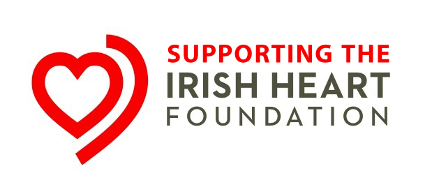
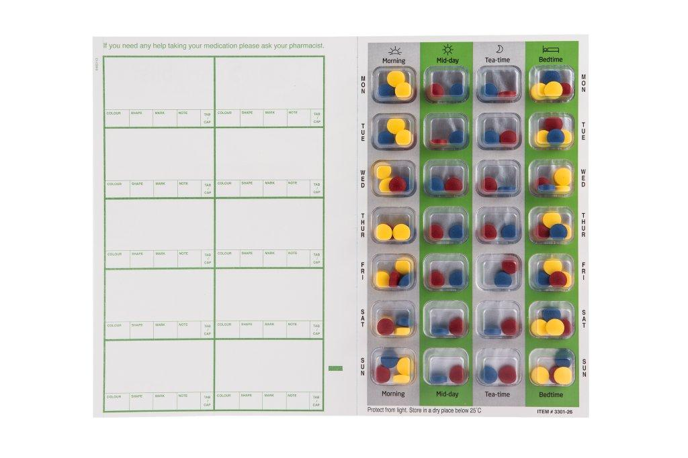

Corks Pharmacy offers a convenient prescription home delivery service. We will collect your prescription from your GP’s surgery. Once our pharmacists dispenses your medication, we will then deliver it straight to your door.
For more information or to arrange this service call us on 023/8846354 or call in store.
Cholesterol Testing

Cardiovascular disease is the biggest cause of death in Ireland for both men and women. Healthy eating, being physically active and not smoking all help to reduce your chances of these diseases. One of the best ways to prevent heard disease and stroke is to keep your cholesterol at a healthy level.
Corks Pharmacy can check your cholesterol level in store. This involves taking a small sample of blood (about one large drop) from the finger tip which is then put into a machine which measures the cholesterol level.
We will let you know your cholesterol level and tell you what, if any, further action should be taken. By taking other risk factors into account (such as age, family history, smoking history etc), we will also be able to tell your overall risk of developing cardiovascular disease and give you advice on lowering your risk.
Call us on 023 8846354 for more information or to make an appointment.
Weekly Dispensing
Corks Pharmacy offers an easy way to organise your weekly medication. The pharmacy will dispense your weekly medicines into trays organised by day of the week and time of day. Simply pop your tablets out of the blister pack for the particular time or day.
This service is suited to anyone who takes multiple medicines, those who worry about remembering their medication and is especially useful for those who care for someone who is taking multiple medications.
This is a free service offered by the pharmacy – discuss this service with the pharmacist next time you are in or feel free to call us on (023) 8846354 for more information.

Food Intolerance Testing
Relief from Food Intolerance Symptoms
Are you suffering from Digestive Problems, migraines or Skin Problems, Tiredness, Depression, Joint pain or Weight Gain?
It could be that you are one of the 45%* of the population suffering from food intolerance. Food intolerance is different from food allergy in that symptoms are delayed, and usually more than one type of food is causing the problem. Symptoms of food intolerance are not life threatening, but they can still have a major impact. Often people with food intolerance take medicines to try and ease their symptoms rather than considering that food could be the cause.
Typically each food intolerance sufferer will have their own pattern of symptoms and a unique “finger-print” of foods that they are reacting to. Working out which foods are causing particular symptoms is not easy when, unlike food allergy, food intolerance symptoms appear up to two or three days after eating the particular foods. You may be eating your problem food or foods every day without realising it.
Based on years of research, 91% of Lorisian customers would recommend the test on offer, and scientific data collected from over 5000 users of the test show that over 3 out of 4 people feel better after acting on the results, the majority within three weeks.
Walker Hearing Aid Clinic
If you are concerned about your hearing have your hearing tested by a qualified audiologist at Brookes Pharmacy’s Hearing Aid Clinic. In association with Walker Hearing Clinic, we supply a number of hearing aid products that are tailored to suit each person’s requirements.
Call us to book a hearing test on 023 8846345
Christmas Club
Corks Pharmacy Christmas Club is now open!
You may select your gifts in advance and avoid the rush! Pay for them in advance in installments over period of time, and once paid in full, you can collect them at your convenience. We at Corks Pharmacy provide FREE Quality gift wrapping service to all our customers.
Gift baskets made to order and vouchers also available
For more information, Pop in-store or call 023-8846354